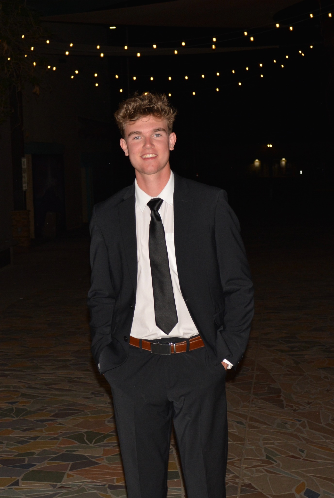

Portfolio & Résumé
Motivated BYU student, returned missionary, and team-oriented professional with a passion for leadership, service, and continuous growth.

About Me
I am a recently returned missionary for The Church of Jesus Christ of Latter-day Saints, currently enrolled as a full-time student at Brigham Young University (15 credits). I'm a motivated, dependable individual who thrives in team-based environments. I enjoy staying active, organizing and leading, learning new skills, and working with others.
During my two-year mission in Recife, Brazil, I served in all leadership roles within the mission field, learned to speak Portuguese fluently, and developed strong communication, organizational, and leadership skills. I'm now channeling that experience into my academic and professional pursuits.
BYU Student
15 credits enrolled
Bilingual
English & Portuguese
Top 10 Graduate
4.0 GPA, Honors
Pianist
10+ years of lessons
Work History
2026 – Present
Guest House Assistant
BYU Guest House & Conference Center — Provo, UT
Nov 2023 – Dec 2025
Full-Time Missionary
The Church of Jesus Christ of Latter-day Saints — Recife, Brazil
Jan 2023 – Nov 2023
Team Member
Chick-fil-A — Las Cruces, NM
Various
Farmhand
Family-Owned Hay Farm — Deming, NM
Various
Participant
State Police Explorers Program — Las Cruces, NM
Academic Background
Brigham Young University
Provo, UT — Currently Enrolled (15 Credits)
Pursuing a bachelor's degree while building on skills developed during missionary service, including leadership, communication, and organizational excellence.
Organ Mountain High School
Las Cruces, NM — Graduate with Honors
Competencies
Leadership
Led in church callings, school student council (Junior Class VP), missionary field leadership roles, and as Cross Country Team Captain.
Communication
Developed strong verbal and written communication through missionary work, student council, and customer-facing roles.
Organization & Time Mgmt
Skilled at planning and organizing schedules, goals, and priorities — developed through mission leadership and student life.
Portuguese (Fluent)
Learned to fluently speak Portuguese to communicate with the people of Recife, Brazil during two years of full-time service.
Piano
10 years of lessons with recitals and performances. A skill that demonstrates discipline, practice, and creative expression.
Adaptability
Moved to Brazil and adapted to a completely different culture, climate, and lifestyle — thrives in new and challenging environments.
Involvement & Honors